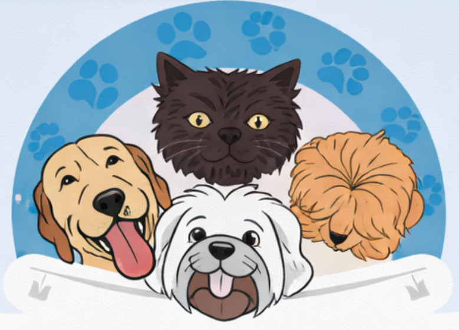

Atendimento domiciliar com mais conforto e menos estresse para seu pet
📍 Jandira e região • Outras localidades sob consulta
Agendar pelo WhatsApp
✔ Menos estresse para o pet
✔ Mais conforto e praticidade
✔ Atendimento individualizado
✔ Menor risco de exposição a doenças
📱 WhatsApp: (11) 94071-5885